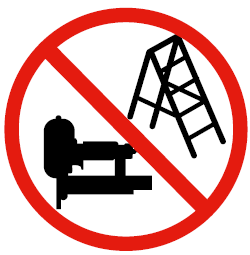

Der Unternehmer hat bei der Gefährdungsbeurteilung die notwendigen Maßnahmen für die sichere Bereitstellung und Benutzung von Handmaschinen zu ermitteln. Dabei hat er insbesondere die Gefährdungen zu berücksichtigen, die mit der Benutzung des Arbeitsmittels selbst verbunden sind und die am Arbeitsplatz durch Wechselwirkungen der Arbeitsmittel untereinander oder mit Arbeitsstoffen oder der Arbeitsumgebung hervorgerufen werden.
Außerdem sind die Hinweise der Betriebsanleitung des Herstellers anzuwenden.
Im Ergebnis erstellt der Unternehmer eine Betriebsanweisung über die Benutzung des Arbeitsmittels und unterweist an Hand dieser seine Beschäftigten.
Siehe Anhang 4 Betriebsanweisung.
Informationen zur Gefährdungsbeurteilung und zu Betriebsanweisungen stellen die Unfallversicherungsträger z. B. im Internet zur Verfügung.
Auf Baustellen kommen Eintreibgeräte mit dem Sicherungssystem "Einzelauslösung mit Sicherungsfolge" oder "Einzelauslösung mit Auslösesicherung" zum Einsatz.
Eintreibgeräte, die mit dem Auslösesystem "Kontaktauslösung" oder "Dauerauslösung" ausgestattet und mit der unter Abbildung 22 dargestellten Plakette gekennzeichnet sind, dürfen auf Baustellen mit wechselnden Arbeitsplätzen, sofern der Arbeitsplatzwechsel über Treppen, Leitern und leiterähnliche Konstruktionen erfolgt, insbesondere bei Arbeiten auf Schrägdächern und auf Gerüsten, nicht eingesetzt werden.

Abb. 22 Aufkleber für Eintreibgeräte
Im Rahmen der Gefährdungsbeurteilung ist zu prüfen, ob alternative Maschinen, z. B. Handkreissäge, Pendelsäbelsäge, eingesetzt werden können, die vom Gefährdungspotenzial geringer einzuschätzen sind.
Persönliche Schutzausrüstung ist je nach Betriebsanleitung des Herstellers, dem Ergebnis der Gefährdungsbeurteilung und der Risikoabschätzung zu tragen, z. B.:
Bei der Arbeit mit Kettensägen ist von einer Überschreitung des oberen Auslösewertes für Arbeitslärm von LEX,8h = 85 dB(A) auszugehen. Die Arbeit erfordert die Bereitstellung von Gehörschutz durch den Unternehmer. Auf die Benutzungspflicht kann verzichtet werden, wenn durch eine Messung die Unterschreitung von LEX,8h = 85 dB(A) unter Berücksichtigung der Messunsicherheit nachgewiesen ist.
Werden auf der Baustelle nur vereinzelte, wenige Korrekturschnitte mit einer Kettensäge ausgeführt, kann der Unternehmer auf der Basis seiner Gefährdungsbeurteilung z. B. die Nichtanwendung von Schnittschutzkleidung begründen, wenn die Sicherheit seiner Beschäftigten in ausreichendem Maße gewährleistet ist.
Dabei sollten folgende Punkte in der Gefährdungsbeurteilung berücksichtigt werden:
Siehe Baustein B 259 der Berufsgenossenschaft der Bauwirtschaft